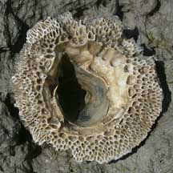
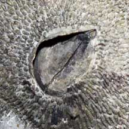
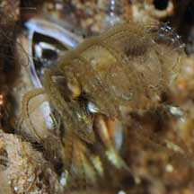
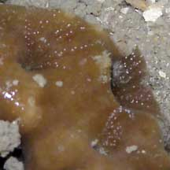
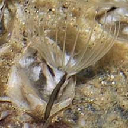
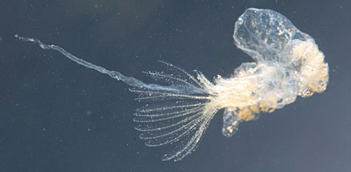
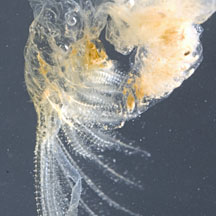
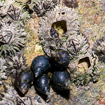
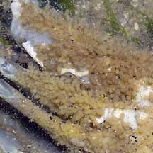

|
|
| barnacles text index | photo index |
| Phylum Arthropoda > Subphylum Crustacea |
| Barnacles Class Cirripedia updated Mar 2020
Where seen? Barnacles are often ignored as our attention is drawn to more colourful and attractive shore animals. But barnacles are fascinating in their own right! Barnacles will grow on any hard surface immersed in seawater, so they are found literally everywhere in the intertidal zone. Barnacles are found on rocks, mangrove trees, pillars, boats. Barnacles are even found on other animals such as whales and sea snakes. There are often even barnacles on top of other barnacles! What are barnacles? Barnacles are crustaceans like crabs and shrimps. But they belong to a different group, their own Class Cirripedia. There are about 900 species of barnacles. Features: Barnacles are often mistaken for snails because of their hard 'shells'. However, barnacles as actually crustaceans. The larvae of barnacles are shrimp-like and swim freely. As it develops, the larvae eventually glues itself head down onto a hard surface and develops a conical outer shell-like structure made up of several plates (wall plates). There is an opening at the centre of this 'shell'. At low tide, the opening is sealed by a door (operculum) made up of a pair of plates. A barnacle without these plates is a dead barnacle! Some barnacles species can be identified by the shape of the operculum plates and number of wall plates. Sometimes confused with limpets which are snails. Here's more on how to tell apart shelled animals found on rocks. |
 A variety of barnacles. Tuas, May 05 |
 The large Volcano barnacle has a honey-combed internal structure Chek Jawa, Apr 02 |
 A pair of plates form the operculum that seals the shell opening. Tuas, May 05 |
| What do they eat? When the tide comes in, barnacles open up their plates and extend their feathery, segmented legs to gather plankton from the water. The legs form a basket that scoops inwards where mouthparts scrape the edible particles off the legs and transfer these particles to the mouth. 'Cirripedia' means 'hairy foot' |
 Feathery feet of a barnacle. Woodlands, Jul 08 |
 Feathery feet of barnacles in a living sponge. Pulau Hantu, May 05 |
 Feathery feet of a barnacle on a living crab. Changi, Jul 09 |
| Barnacle babies: Barnacles are
usually hermaphrodites, each barnacle having both male and female
reproductive organs. However, they don't self-fertilise. They also
don't release eggs and sperm into the water at the same time, like
many other marine creatures. Instead, they practice internal fertilisation.
As these animals cannot move, this is achieved by having tremendously
long male organs! Some have an organ that can reach another barnacle
7 shells away! A study, however, has found that longer
isn't always better, for a 'male' barnacle. In some species, a miniature male-only individual settles into the 'shell' of a larger member of its species. Reduced to little more than a sack of sperm, the male relies on its 'host' for protection and sometimes even food, in exchange for fertilisation services. Many barnacles brood their eggs, releasing the free-swimming larvae that look nothing like the adults. The first form is a nauplius which looks shrimp-like with antennae, an eye spot, jointed appendages and a shield-shaped body. The larva spend some time drifting with plankton, moulting several times. Eventually, it changes form into a cyprid larva which has a hinged hardened body with large antennae and more appendages. At this stage, it does not feed and uses its chemical and touch detectors to detect adults of its own species and suitable areas for it to settle down. When it finds the right place, it secretes a glue from special glands in its antennae to attach itself permanently. Barnacles tend to settle where others of their own species have already settled. For animated diagrams of the larval stages of a barnacle, see Keith Davey's site. Here are fascinating photos of a barnacle larva on Image Quest 3-D Marine Library Barnacle zonation: An ideal spot for a barnacle is lower down the rock where it gets wet more often. The further up a rock a barnacle settles, the hardier the barnacle must be to withstand longer periods out of water and the heat of the sun. There is competition among barnacle larvae for the best spots on a rock to settle down on. Each species of barnacle survives best in a spot where it does better than its competitors. As a result, different species of barnacles are found in distinct zones on a rock. |
 Like other crustaceans, barnacles also moult! Is the long structure its penis?! Seletar, Feb 12 |
 |
| Strange
barnacles: Stalked or Goose barnacles are sometimes seen
on our shores. These barnacles have a distinct stalk that connects
the body to the hard surface. Lepas sp. has white plates and clumps of this species often attached to floating
objections like boats or snail shells. Some barnacles burrow
into living corals, others may be found in
sponges. Some barnacles have become parasites that live inside other animals. Parasitic barnacles such as Thompsonia sp. grow through the body of the host crab like a root system. The parasite does not kill the crab but it does affect the crab's reproductive system such that the crab becomes infertile. The parasitic barnacle eventually produces egg sacs that emerge through the crab's joints. Role in the habitat: Despite their protective plates that are strongly glued down, barnacles are eaten by crabs, snails such as drills and the Spiral melongena snail and other predators. Dead barnacle shells provide hiding places for many small creatures. Sometimes you might see tiny mussels, small periwinkles and other animals hiding in the hollow shell of a dead barnacle. |
 Periwinkles sheltering next to barnacles, with a small one inside shell of a dead barnacle. Changi, Jun 05 |
 Barnacles on a living snail. Changi, Jun 05 |
 Tiny egg sacs of a parasitic barnacle emerging through the joints of the crab that it infested. Changi, Apr 05 |
| Human uses: Barnacles are considered a menace to the shipping
industry. An encrustation of barnacles soon develops over every ship
hull. This reduces the speed of the ship and increases fuel consumption.
Efforts to deter barnacle infestation include coating ship hulls with
a toxic paint. However, this does not last and the toxic paint poisons
the surroundings. The barnacles' tendency to accumulate heavy metals in their plates, however, makes them useful as bio-indicators to measure water pollution. The strong glue that barnacles use to cement themselves to the rock has been studied for use in dentistry for a similar protein cement to fit dentures. The glue has amazing properties: it hardens quickly under water and continues to work under pressure, in strong acids or alkalis and temperatures up to 225degC (440degF). The glue is so strong that even after the barnacle dies, its 'shell' stays stuck to the rock. It is a common misconception that barnacles are used to make the popular local dish of oyster omelette or 'or luak'. The ingredient in that dish is indeed oysters and NOT barnacles. Status and threats: Our barnacles are not listed as endangered. However, like other creatures of the intertidal zone, they are affected by human activities such as reclamation and pollution. Trampling by careless visitors also have an impact on local populations. |
| Some barnacles on Singapore shores |
|
Mating barnacles from Casey Dunn on Vimeo. |
| Class
Cirripedia recorded for Singapore from D. S. Jones & A. M. Hosie. 29 June 2016. A checklist of the barnacles (Cirripedia: Thoracica) of Singapore and neighbouring waters. *from Lim, S., P. Ng, L. Tan, & W. Y. Chin, 1994. Rhythm of the Sea: The Life and Times of Labrador Beach. ^from WORMS
|
Links
References
|